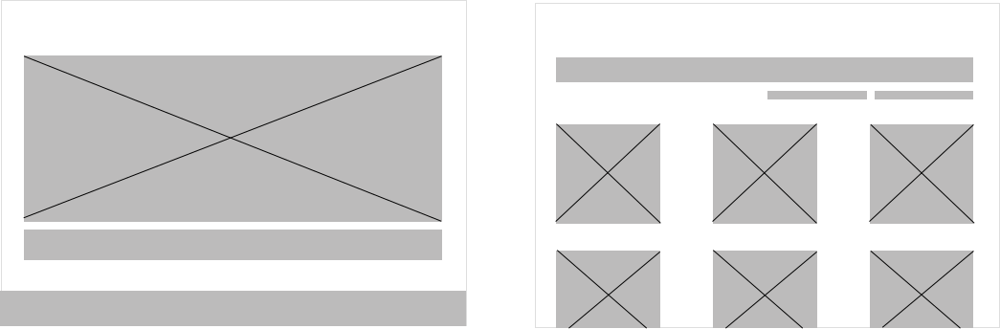

Project Overview
Previously known as Judith's Sweet Creations & Beyond. Their goal was to highlight all of their products and assist their customers with a facilitated ordering system.

Original Ordering System: Via Facebook
Designed Ordering System: Via a Website
What was the problem before?
Communication: Judith did not have a formal ordering system for her small-business as her main form of communication was through Facebook.
Product Display: Facebook made it difficult for Judith to display all of her products. Many of her customers were not aware of all of the products she sold.

Original Facebook Site Menu
Designed Website: Product Listings
My role was to...
Design a website which would clearly display their products, label dietary/allergen information and provide information about their delivery system.
With who?
I worked alongside the business owners - Judith and Dennis, their accountant and 5 of their customers/participants.
Together, our impact was...
Assisted customers with ordering products by having simple labels and instructions
Allowed all products to be showcased clearly
Encouraged customers to order by offering multiple contact methods
Transformed and updated Judith's brand identity
Share Judith's business to a wider audience
The Design Process: From Storyboards to Prototypes
Storyboards: Understanding the customers' motivations
Storyboard 1: Looking for products with dietary restrictions.
Storyboard 2: Ordering and buying products.
Wireframes: 4 proposed layouts for the 4 main website pages
Home Page
Product Listing
Product Page
Shopping Cart
Low-fidelity Prototype
A mobile adaptation was created for the low-fidelity prototype, as it was predicted that most users would order through their mobile device over a desktop.

User Research: Product Testing & Personas
Testing Objectives
1. Scope the convenience of ordering and browsing from the proposed website, in comparison to their old Facebook page
2. See if all products on the prototype are easily viewable and accessible, along with their product information
Testing Process
5 Participants
4 Steps
3 Tasks
1. Initial Screening - Participants who have previously ordered from Judith were asked questions regarding their experience with technology
2. Low-fidelity Prototype - They were then given a paper prototype of the proposed website layout in a mobile device, where they were asked to pretend to navigate through the website.
3. Tasks Given - During the navigation through the prototype, participants were met with 3 scenarios which replicate situations that occur as if they were to use the website
4. Post-testing - The participants were presented with 2 post-questionnaires inquiring about their experience with Judith's Facebook webpage and about the features of the website prototype.
Testing Trends
- 5/5 participants agreed on the difficulty in browsing through the products on the Facebook page
- 5/5 participants agreed on the difficulty in seeing the product ingredients on the prototype
- 3/5 participants agreed that they prefer submitting enquiry forms, emails or text messages rather than calling
User Personas
In order to further understand Judith's customer base, I collated the user participant's characteristics, goals and technology proficiencies. These two personas are representative of the majority participant responses.

The Browser

The Dietary Restricted